Apply while you live your life.
Sudarshan AI is a job application agent that runs on your own computer. It searches job sites, scores every job against your profile, fills and sends the applications you approve, and comes back to tell you what happened.
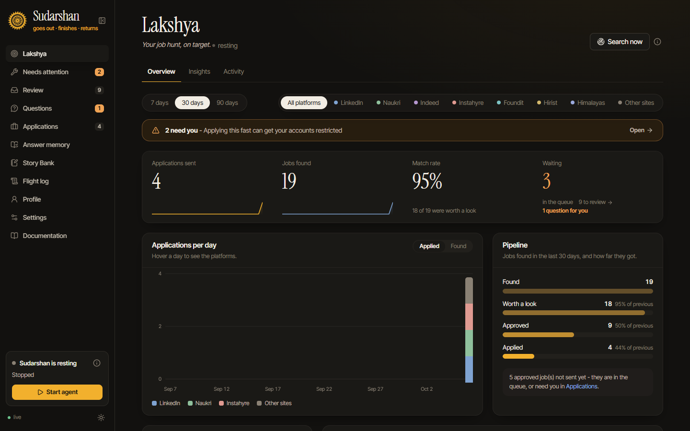
Why the name
In the Dwapar Yug, Shri Krishna's Sudarshan Chakra was released once and did the rest on its own: it went out, finished its task with precision, and returned to his finger. That is what this agent does. The main page is called Lakshya (लक्ष्य, "the target"), the aim Arjuna never took his eyes off. Here the target is your next job.
What makes it different
- Everything stays on your computer. Your resume, answers and logins never leave it. There is no account and no server of ours.
- You stay in charge. By default nothing is sent until you approve it. Sudarshan AI asks you only what it cannot know, once, and never guesses personal facts.
- It gets faster with use. Every answer is remembered and reused, so after a few dozen applications most forms fill without any AI call.
- Any AI, or none. Bring a key from Anthropic, OpenAI, Gemini, Groq or OpenRouter, run a free local model (Ollama, LM Studio), or use no AI at all.
How it works
Five steps, in a loop, all day long while the agent runs.
- Search. Sudarshan AI searches the job sites you switched on for your job titles and locations, every few hours. It also takes any job link you paste in, from any career site.
- Score. Each job is compared with your profile: your skills (and years with each), experience, salary, location and the companies or titles you never want. It gets a score from 0 to 100 and a short reason.
- You approve. Strong matches wait on the Review page. Approve them one by one or all at once. In Auto mode, jobs above your auto-apply score are queued for you.
- Apply. One job at a time, at a human pace, in its own visible browser window: it opens the job, presses Apply, fills every field from your profile and answers, uploads your resume and sends it.
- Report back. Every result lands on Lakshya and the Flight log. Anything that needs you (a captcha, a login, a question) appears in Needs attention and, if you like, as a desktop or Telegram alert.
Install and start
About five minutes the first time. Nothing to sign up for.
You need
- Node.js 22.13 or newer (the installer below adds it if missing).
- Google Chrome, Microsoft Edge or Brave.
- Windows, macOS or Linux. No database, Docker or Python.
One-command install
It installs Node.js if needed, downloads Sudarshan AI, adds a Sudarshan AI shortcut and starts it. Installed this way, it updates itself each time it starts.
Windows (PowerShell):
irm https://raw.githubusercontent.com/ankurpandey27/sudarshan-ai/master/install.ps1 | iexmacOS or Linux (terminal):
curl -fsSL https://raw.githubusercontent.com/ankurpandey27/sudarshan-ai/master/install.sh | bashOr run it yourself
git clone https://github.com/ankurpandey27/sudarshan-ai.git
cd sudarshan-ai
npm startThe first run installs, builds and downloads a small answer-matching model (about 130 MB, once), then opens http://localhost:4747. Later runs start in seconds. To stop it, press Ctrl + C in the terminal.
First-run setup
A four-step wizard. Only the resume is required.
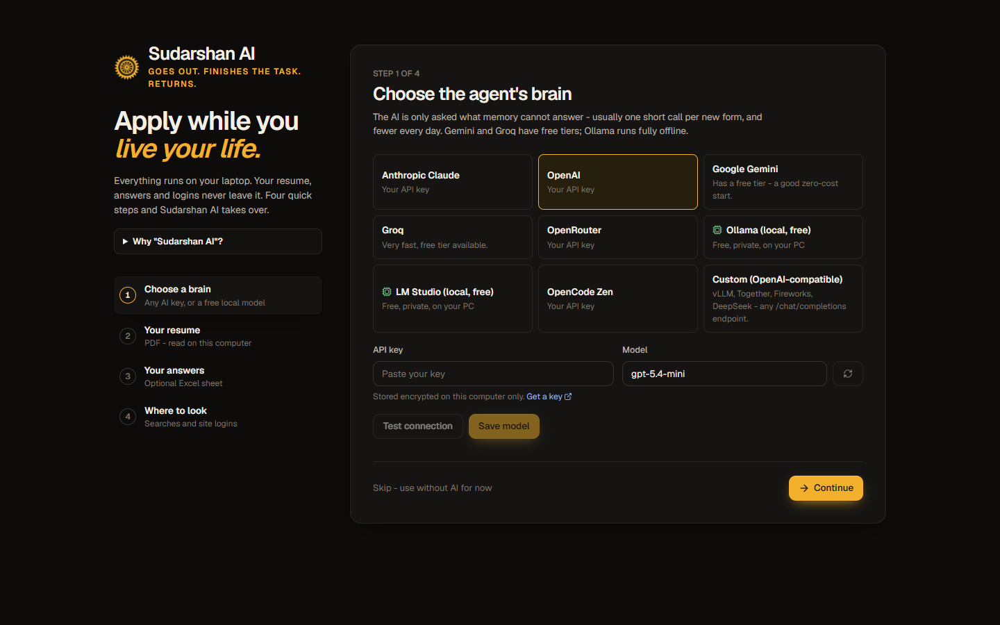
- Choose a brain. Pick an AI provider, paste its key (local models need none), press Test connection, then Save model. See AI model for which one to pick.
- Your resume. Drop your PDF. Sudarshan AI reads it into a profile on your computer. Then fill in your notice period, current CTC and expected CTC: nearly every form asks for them.
- Your answers (optional). Download the Excel template, fill in what you know, upload it. See The Excel sheet.
- Where to look. Your job titles and locations (add
Remotefor remote roles), then log in to LinkedIn and Naukri in the browser window Sudarshan AI opens.
A typical day
- Open Sudarshan AI and press Start agent (bottom left). It searches, scores and starts applying to anything already approved.
- Spend a few minutes on Review: approve the jobs you want.
- Answer anything on Questions. Each answer unblocks every job waiting on it.
- Check Needs attention now and then: tick a captcha, log in again, or fix a setting.
- In the evening, read the day on Lakshya (or your daily summary). Sudarshan AI rests outside your active hours and carries on the next day.
Lakshya
Your job hunt at a glance.
The main page, in four views: Mission control (live), Overview, Insights and Activity.
One look tells you whether Sudarshan AI is working, what it achieved and what needs you, without reading logs.
Everything updates live while the agent runs. Overview and Insights cover 7, 30 or 90 days, for one platform or all of them.
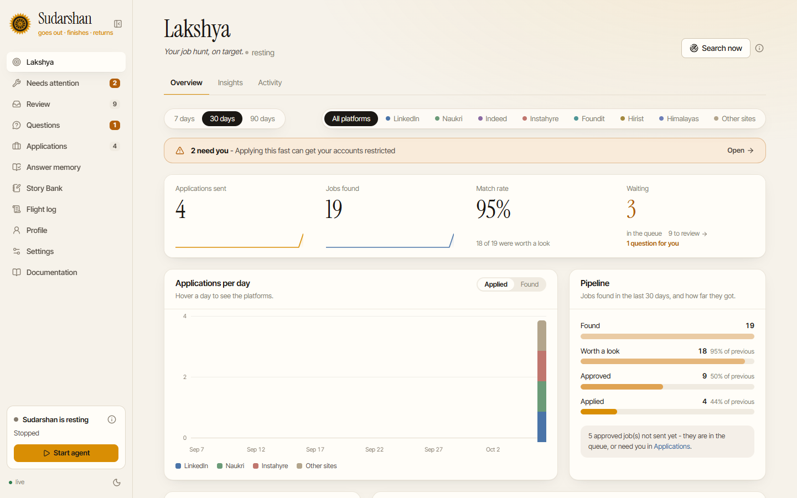
The views
| View | What you see |
|---|---|
| Mission control | Opens first. The live view: a radar of every job waiting for you, what the agent is doing right now, what needs you, and today on a timeline. See Mission control. |
| Overview | Applications sent, Jobs found, Match rate (share of jobs worth a look) and Waiting (in the queue, to review, questions for you). The Pipeline shows how many jobs went from found, to worth a look, to approved, to applied. |
| Insights | Match quality (score spread against your apply score), Where your applications went per platform, Skills jobs asked for that you don't list (worth adding, or learning next), Why jobs were skipped (each reason is a setting you can change) and Your interest. |
| Activity | The latest things the agent did, as on the Flight log. |
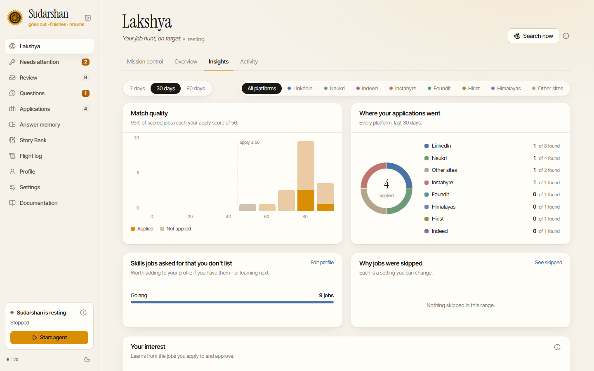
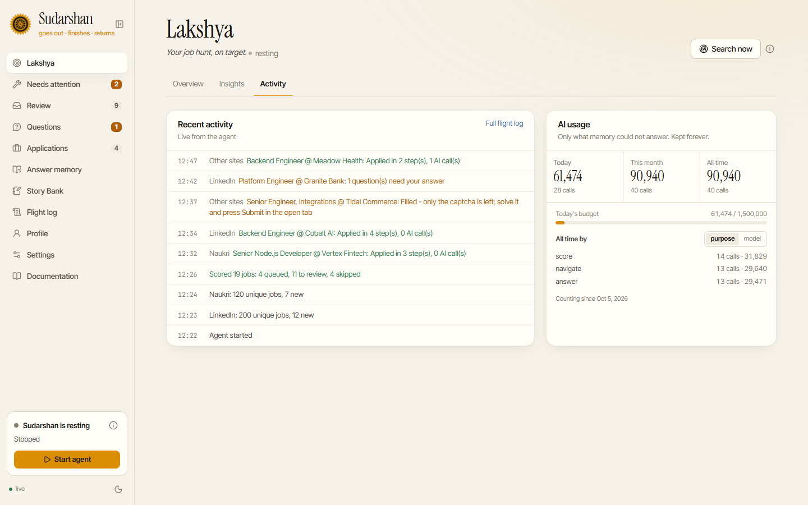
Today and Apply on
On Overview, below the charts, Today shows how many applications went out today and how much of each site's daily limit is used: a bar turns orange when a site has reached its limit and waits until tomorrow. Next to it, Apply on has a card for every job site, with what Sudarshan AI does there, today's applications against the limit, and how many jobs are queued. The switch on each card turns that site on or off; a site that is off keeps its jobs waiting, nothing is lost. A card also says when a site is paused, in careful mode, or refusing applications for a while.
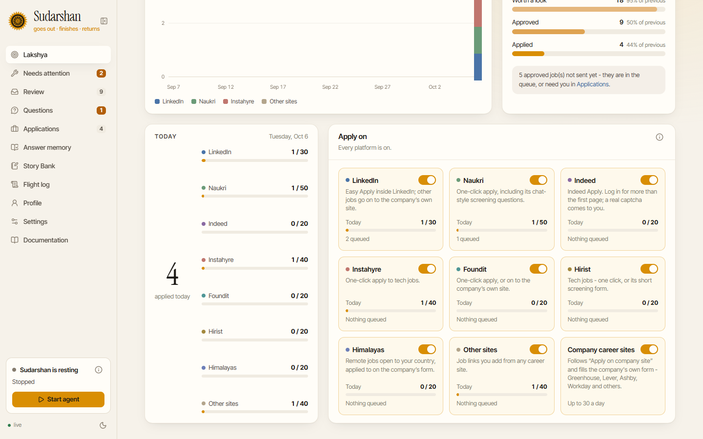
The controls
- Start agent / Stop agent (bottom left, on every page). Stop lets the application in progress finish, then rests.
- Search now runs a search straight away instead of waiting for the next scheduled one.
- The yellow bar ("2 need you") opens Needs attention.
- The moon button (bottom left) switches light and dark. This guide follows it.
Mission control
Lakshya's first view: watch the chakra go out, finish the task and return.
A live view of your hunt: a radar of every job waiting for you, a window on what the agent's browser is doing, what needs you, and today on a timeline - with a command bar to act in one sentence.
Lists and charts tell you what happened. This shows it happening: where your best matches are, which country they are in, and each application as it flies out.
Everything is real and live: the dots are your jobs, the comets are the agent's applications, the pictures are its browser's own. Nothing moves that the agent is not doing.
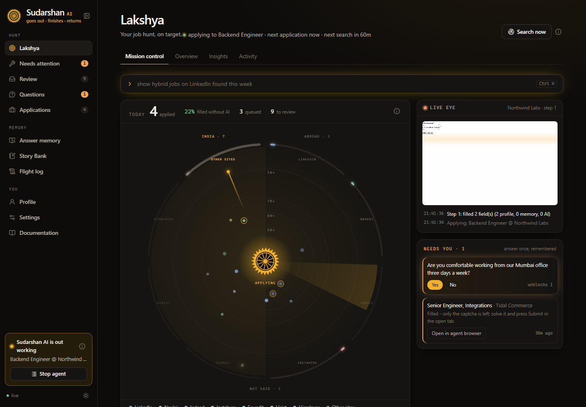
The radar
Every job waiting in Review or queued to apply is a dot, coloured by its site (the 200 best matches when there are more).
| On the radar | What it means |
|---|---|
| Distance from the chakra | The score. Closer is a better match; the rings are 90+, 80+, 70+ and 50+. |
| Left half / right half | Left: jobs in your country (the one on your Profile). Right: abroad. Jobs that do not say where sit in a wedge at the bottom ("not said"). The same split as Review's Where filter. |
| A ring around a dot | The job is approved and queued to apply. |
| The sweep | Circles while the agent runs - faster while it searches - and lights each job as it passes. New jobs from a search grow in. |
| Comets | An application in flight: it leaves the chakra when the agent starts on a job, flies towards the arc of the site it is applying on (a LinkedIn application flies to LinkedIn's arc), holds while the form is filled, and lands on that arc when it ends - a green burst when it went through, orange when it was handed to you or put back, red when it failed. |
| Arcs on the rim | Each site's daily limit, with the site's name, filling as applications go out; orange when the limit is reached. The arc a comet is flying to lights up and its name turns gold. Hover one for the numbers. |
| The chakra | Turns slowly when the agent rests, faster while it applies. The word under it says what the agent is doing. |
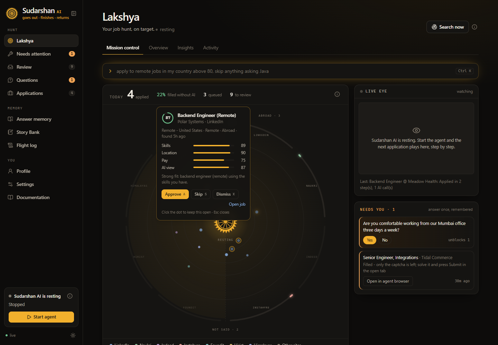
Acting on a job: on a job to review, A approves, S skips and X dismisses; on a queued job, N applies now and U moves it back to review. Esc closes the card. These do exactly what the same buttons on Review do.
The command bar
Say what you want in a sentence, then press Enter. Ctrl + K jumps to it.
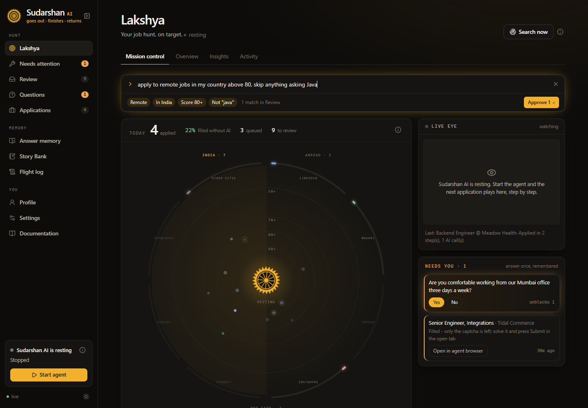
- It understands: remote, hybrid, on-site; in your country ("in India", "my country") or abroad ("abroad", "not in India"); a score ("above 80", "85+"); a site ("on LinkedIn"); how recent ("today", "this week", "last 3 days"); and words to leave out ("skip anything asking Java", "without PHP or Angular"). Left-out words match whole words, so "Java" does not leave out JavaScript jobs.
- Starting with apply, approve or queue approves the matching jobs in Review - the button shows how many first. Anything else shows them in Review with the filters Review has (work type, where, how recent).
- It is read on your computer, without any AI - it works the same with every model, or none. Words it does not know are simply not used; the chips always show what was.
Live Eye
The application in progress: the newest picture of the agent's browser (one is taken at each step of the form) and each step as it happens - "filled 4 fields (3 profile, 1 memory, 0 AI)", "Submit application". When nothing is being applied to, it says why: resting, the time of the next application, or nothing approved yet. The pictures are the same ones kept for each attempt's replay in Applications.
Needs you
Questions only you can answer, with their choices as one-tap buttons (or a box to type in, pre-filled with a suggestion, when a question takes several choices) and how many jobs each answer unblocks; and jobs to do by hand (a captcha, a login) with Continue when their tab is still open and Open in agent browser. The count is what waits on you now: questions, and hand-overs whose tab is still open. Answers are saved to Answer memory, as on the Questions page.
Flight recorder
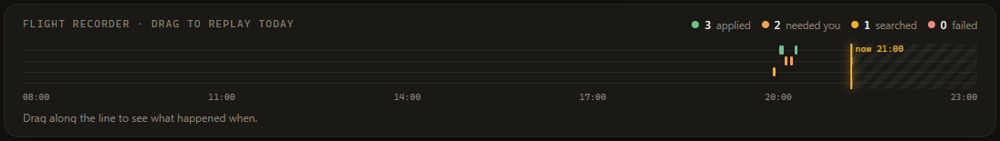
Every application, hand-over, search and failure from today's Flight log, on one line. Drag along it (or use the arrow keys) to see what had happened by then and the nearest event; let go and it returns to now.
Needs attention
What is stopping Sudarshan AI right now, most serious first, and how to fix each one.
A list of problems and suggestions: a question waiting, a login that ran out, a pace that is too fast, an AI key with no credit.
Sudarshan AI never fails quietly. Instead of a stuck queue, you get a plain explanation and a button that takes you to the fix.
Each card says what happened and How to fix it. Orange cards block applications; blue ones are tips. Close a card with ×.
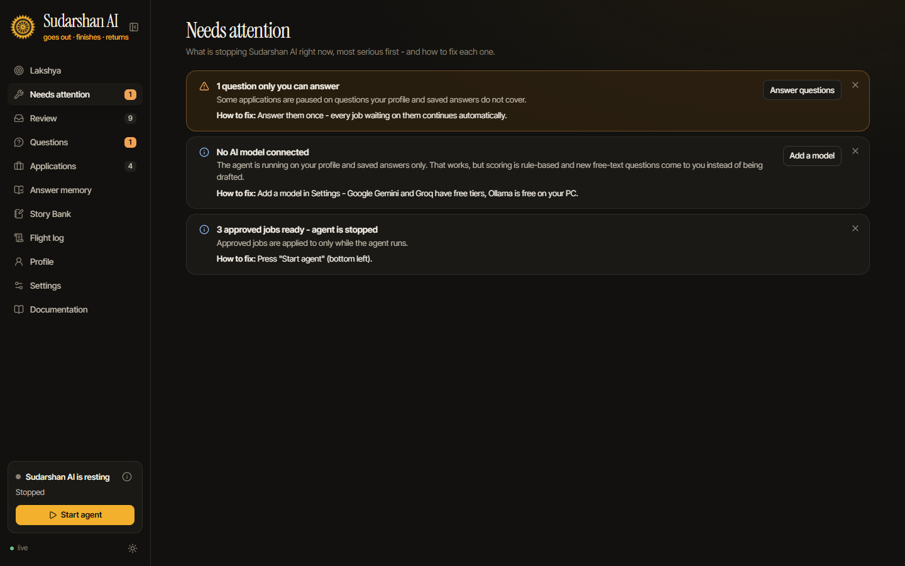
The count next to Needs attention in the sidebar shows only what needs you, not tips. See When something goes wrong for the common cards.
Review
The jobs Sudarshan AI found and scored. Approve a batch and it applies to them one by one.
Every job worth a look, with its score (0-100), company, location, platform, salary when known, and the skills it matched.
You decide where you apply. Sudarshan AI does the searching and sorting so a few minutes a day is enough.
Approve jobs one by one, select several, or press Approve all N scoring X+. Approved jobs join the queue.
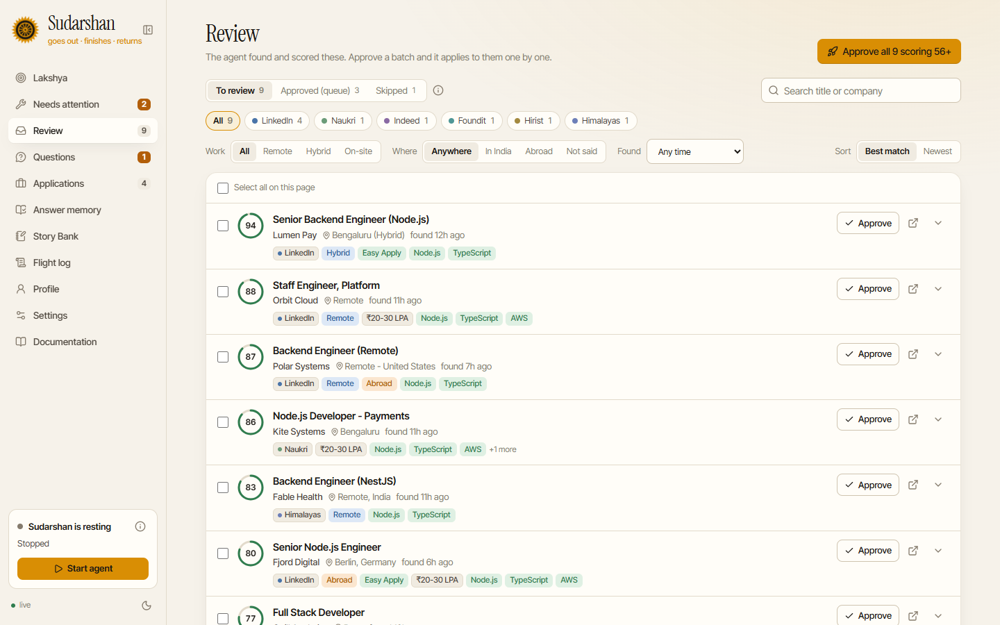
The tabs
| Tab | What it holds |
|---|---|
| To review | Jobs scoring at or above your review score and not decided yet. |
| Approved (queue) | Jobs waiting to be applied to, in the order Sudarshan AI will take them (Apply order): job links you added first, then, with Apply to jobs in my country first on, jobs in your country, then jobs that do not say where, then jobs abroad; within each, the best matches first. Move to review takes one out. |
| Skipped | Jobs scored too low, or excluded by your rules (a company or title word you never want, salary below your expected CTC, not remote, a junior role). The reason is shown on each; approve one anyway if you disagree. |
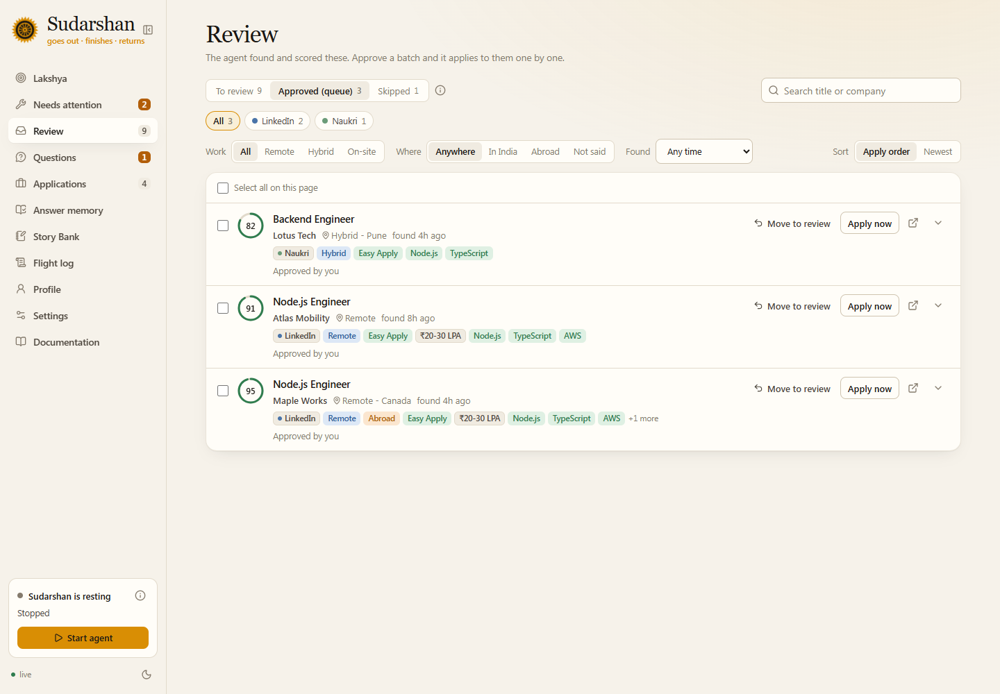
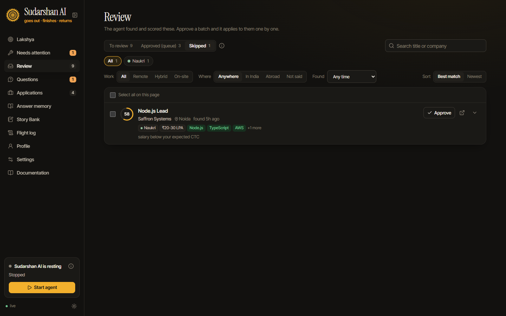
How the score is made
- Your exclusions first: never-apply companies, skipped title words, remote-only, posted within.
- A free rule-based score: skills you have (and your years with each), experience, salary against your expected CTC, location.
- With AI scoring on, the AI reads the job description in batches of several jobs per call and adds its view.
- A job asking for one of your core skills is never skipped for a low score; it waits here, saying why.
Filters and sorting
Filters stay set in your browser until you press Clear filters, and every tab uses them.
| Filter | What it does |
|---|---|
| Platform chips | One job site, with how many jobs each has. |
| Work | Remote, Hybrid or On-site. Read from the job's location and title ("Hybrid - Bengaluru", "Work From Home"), and from a description that clearly says hybrid ("3 days a week in the office"). |
| Where | In <your country>, Abroad, or Not said - measured from the country on your Profile. A job counts as in your country when its location names it ("Remote (India)") or a place in it; Sudarshan AI learns those places from the listings themselves, so "Noida" alone is known once it has been seen as "Noida, Uttar Pradesh, India". Sites that only list one country's jobs (Naukri, Instahyre, Foundit, Hirist) count as that country. A bare "Remote" with nothing else stays Not said - it is never guessed. Jobs abroad carry an Abroad badge. |
| Found | Only jobs posted (or found, when the site does not say) in the last 24 hours, 3, 7 or 30 days. |
| Search | Words in the title or company. |
Sort by Best match (score), Newest (most recently posted first) or Your interest (how much a job looks like the ones you usually approve). With any filter on, Approve all … shown approves only the strong matches the filters show - for example only remote jobs in your country.
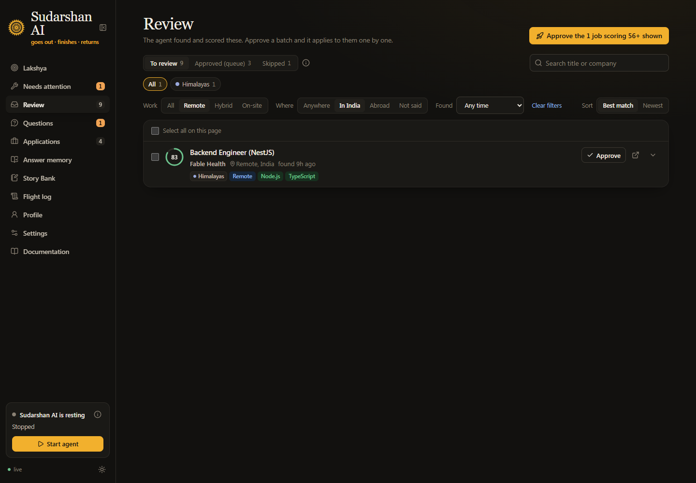
Questions
Things only you can answer. Each answer is remembered and unblocks every job that asked it.
Questions from application forms that your profile and saved answers do not cover, such as a referrer's name or a city-specific question.
Sudarshan AI never makes up facts about you. When it cannot know, it asks once instead of guessing.
Answer and press Save answer. The answer goes to memory and every job waiting on it goes back into the queue.
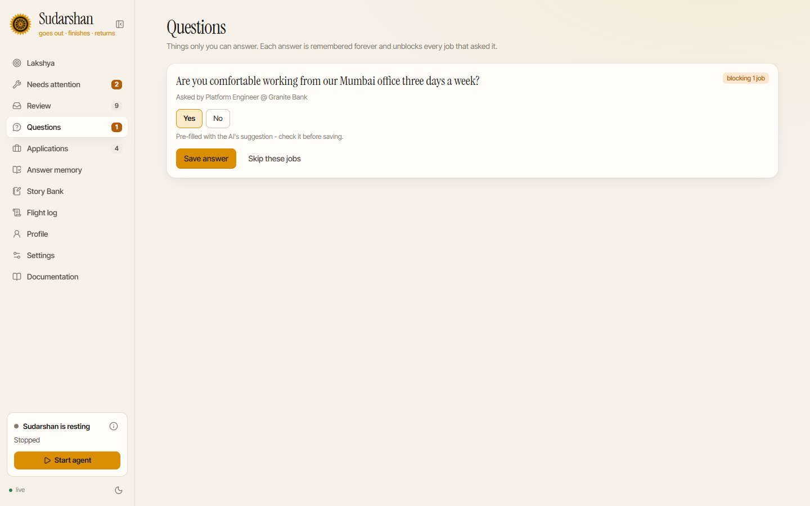
- All of one application's questions are asked together, so you answer a form in one go.
- Questions in other languages are shown with an English translation.
- High-stakes questions (salary, notice, visa, legal declarations, date of birth, ID numbers) are never guessed by the AI. They come from your profile or from you.
Applications
Every job the agent touched, with the full trace of what it did.
Your applications: sent, needing attention, or everything, with the replay of each attempt.
You can always check what was sent where, and see exactly where an application got stuck.
Open a job (the arrow on the right) to see its Attempts: every step, every field filled and a picture of each page.
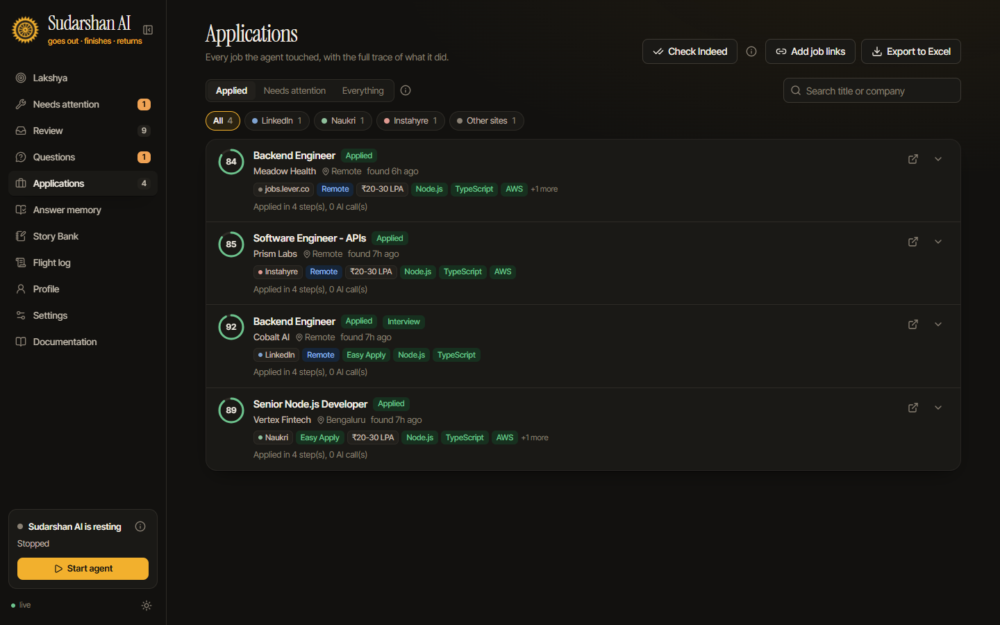
The tabs
| Tab | What it holds |
|---|---|
| Applied | Applications that went through. |
| Needs attention | Needs you (a question), Do by hand (a captcha, an account to create, a site Sudarshan AI cannot finish) and Failed. |
| Everything | Every job in every state. |
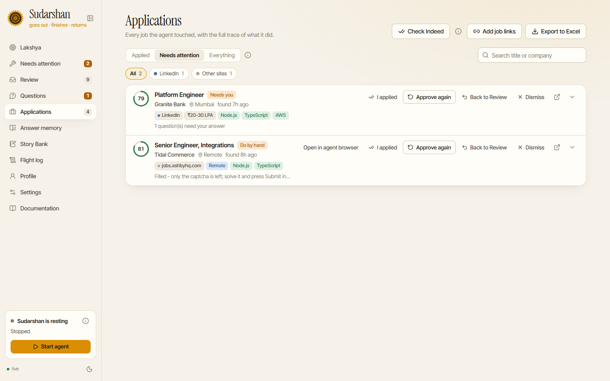
The buttons
| Button | What it does |
|---|---|
| Continue | You solved the captcha or logged in: Sudarshan AI carries on in the open tab from where it stopped. |
| Open in agent browser | Opens the job in Sudarshan AI's own browser, where you are logged in, to finish by hand. |
| I applied | You finished it yourself: counts it as applied. |
| Approve again | Back into the queue, to try again. |
| Back to Review | Out of the way, to decide later. |
| Dismiss | Not interested: drop it. |
| Add job links | Paste any job URLs (any site). They are queued straight away. |
| Export to Excel | A spreadsheet of your applications, as a tracker. |
| Check Indeed | Reads your Indeed "Applied" list and marks those jobs applied, for ones finished outside Sudarshan AI. |
Answer memory
Everything Sudarshan AI has learned to answer, and where each answer came from.
Every question it has answered, with the answer, its source (you, your profile, a spreadsheet or the AI) and how often it was used.
Remembering makes every form faster and cheaper. Seeing it lets you correct anything that is wrong.
Edit or delete any answer. Your own answers always win over the AI's. Sort by most used, recently changed or A-Z.
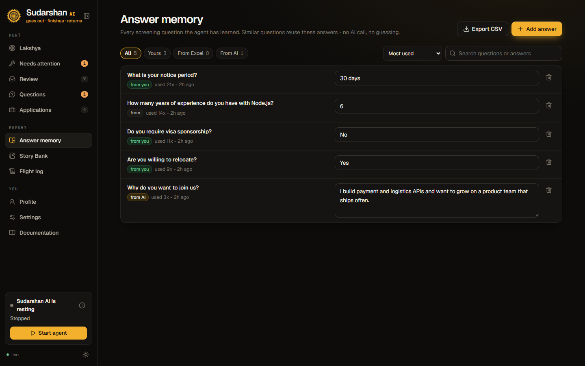
An AI answer is saved only after the form shows it took, so a fill that failed never becomes a lesson. Answers about the one job ("Why do you want to join us?") are not reused.
Story Bank
Your real work, in your words, for written answers.
A short interview about your proudest work, something you made faster, a hard problem, a time you led.
Written questions ("Why are you a fit?", "Describe a challenge") are where applications stand out or sound generic.
For each job, the stories that fit are given to the AI, which builds written answers on their facts and never changes their numbers.
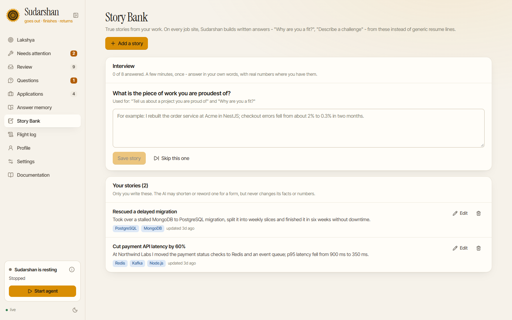
Written answers follow plain-writing rules: no "leverage", "robust", "spearheaded", no "I am thrilled to apply". An answer that still reads as AI-written is rewritten once, with the same facts.
Flight log
Everything the agent did, in order.
A running log: searches, scoring, every application step, hand-overs, errors and backups.
When something looks wrong, the log says exactly what happened and when. It is also what to share in a bug report.
Filter to Applications or Problems, and to one platform. Click a job's line to open it.
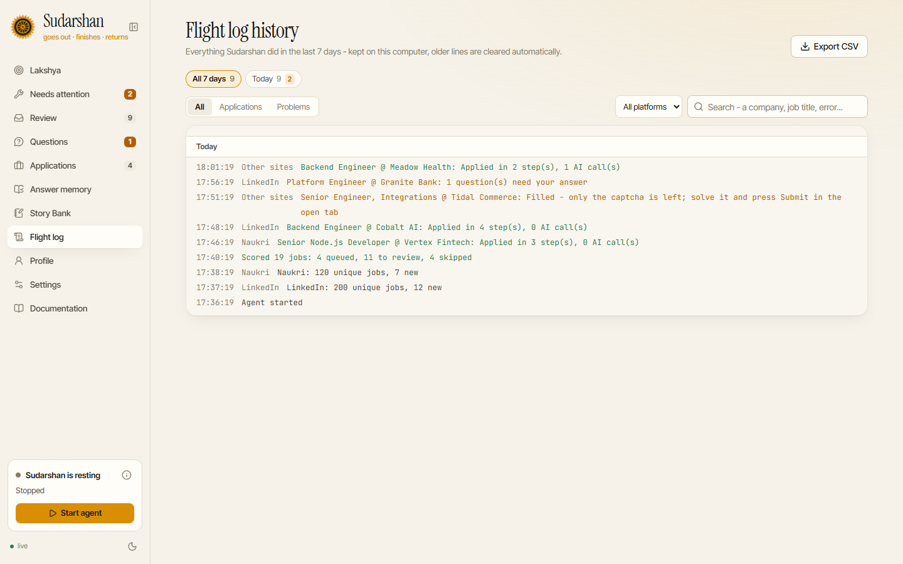
Profile
What Sudarshan AI knows about you. Most form fields are filled from here.
Your details, work history, skills with years, pay and availability, read from your resume and editable.
Forms ask the same things everywhere. Keeping them accurate here means every application is accurate.
Fill or correct each tab and save. After a big change, press Re-score jobs in Settings.
| Tab | What it holds |
|---|---|
| About you | Name, email, phone (with country code), city, state, country, links (LinkedIn, GitHub, portfolio), headline, summary, languages, work authorization and sponsorship, your resume, and resumes for other roles. |
| Work | Your jobs (title, company, dates, what you did) and education. "Have you worked for X?" and education years are answered from here. |
| Skills | Each skill with your years. "Years of experience with X" questions are answered from these, never more than your total experience. |
| Pay & availability | Notice period, current and expected CTC, currency, willingness to relocate, remote preference, and the clean-record declaration. |
| Profile check | Skills you have but have not listed, and skills many of the jobs found ask for. Add them in one click. |
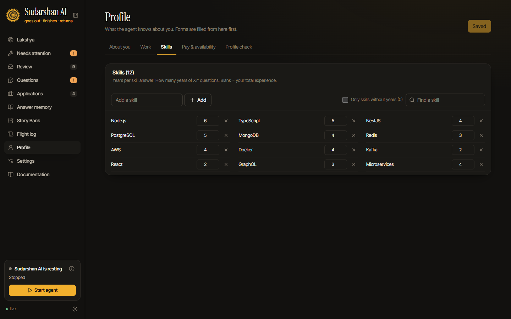
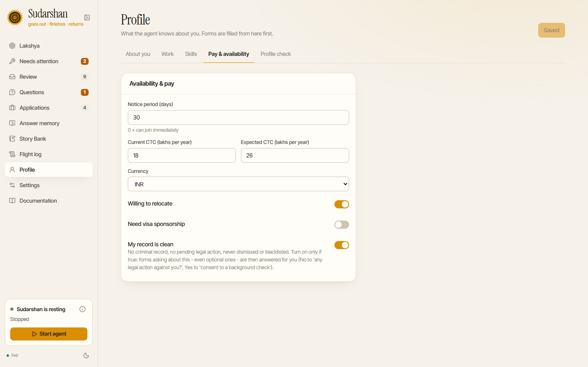
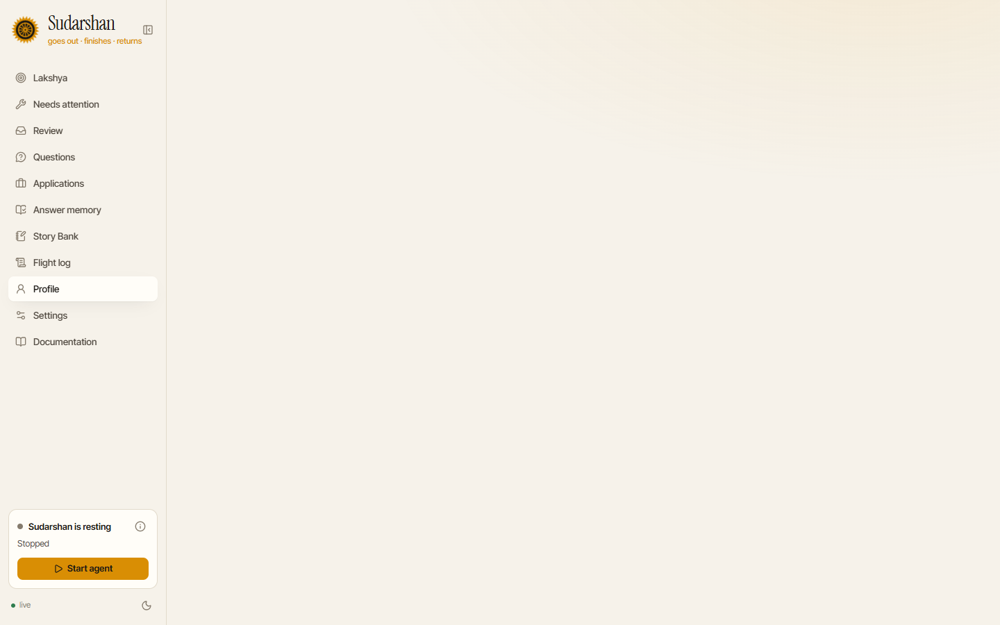
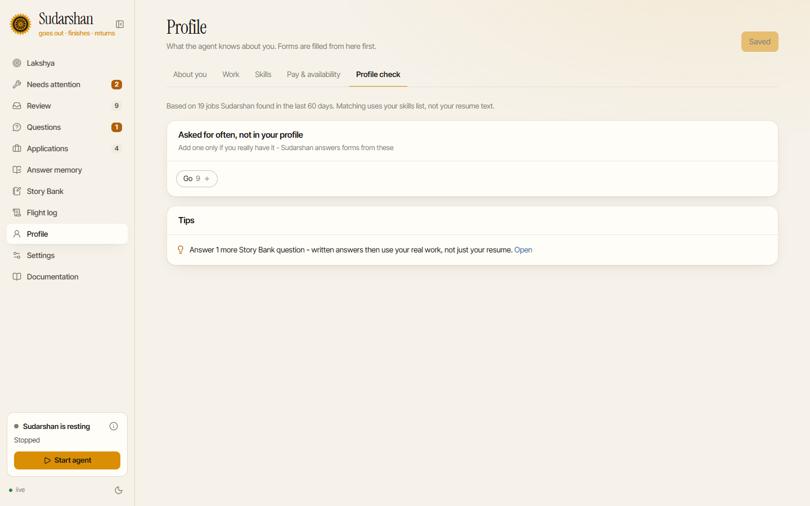
Resumes for other roles
Add a resume per kind of role (for example "Frontend" or "Data"). Each application attaches the one made for that job, by words in the job's title; your main resume otherwise.
The agent window
The page Sudarshan AI's own browser shows while it works - its mission control.
A live status page in the agent's browser: what it is doing right now, today against each site's daily limit, the queue, a live feed, AI usage and the schedule.
When you glance at the agent's window you see at once whether it is working, resting or waiting for you - and what to do about it.
It updates itself every few seconds and follows your light or dark theme. Open Lakshya brings you back to the app.
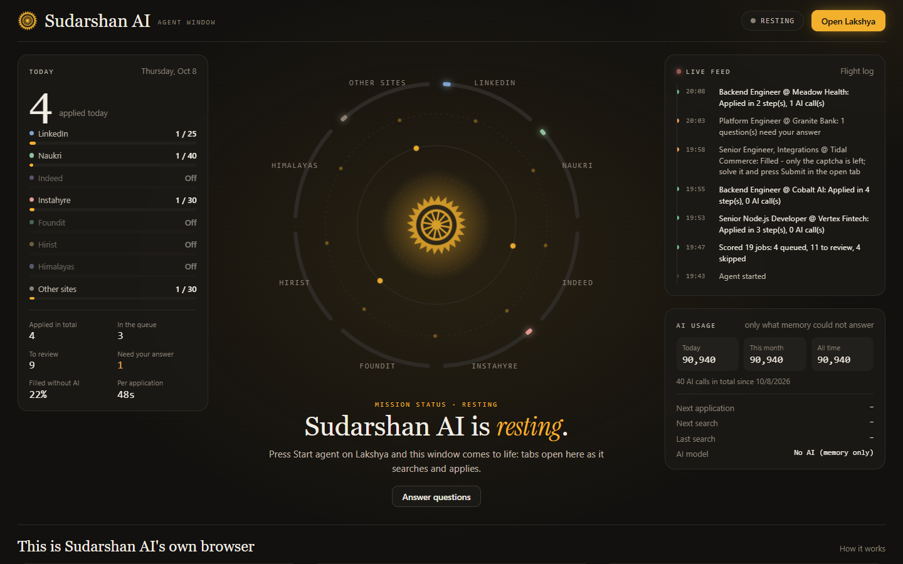
| Part | What it shows |
|---|---|
| The orbit | The chakra in the middle turns slowly when resting and fast while working. A sweep circles while the agent runs (faster while it searches). Each queued job is a dot circling close in; jobs waiting for your review circle further out. Each site's daily limit is an arc on the rim, filling as applications go out, orange when it is reached. While an application is in flight, a comet flies out from the chakra. |
| Mission status | What it is doing in plain words - applying (with the job and its current step), searching, pausing between applications, outside active hours, or what it needs from you (a log-in, your approval, an answer), with a button to get it done. |
| Today | Applications today against each site's limit, and totals: in the queue, to review, questions for you, the share of fields filled without AI, and the usual time per application. |
| Live feed | Searches, applications and hand-overs as they happen, newest first; new lines slide in. Flight log opens the full log. |
| AI usage and schedule | Tokens used today, this month and in all, then when the next application and search are due and which AI model is in use. |
AI model
Used to read your resume, score jobs and answer new questions.
The AI provider, model and key Sudarshan AI uses, plus an optional fallback model.
The AI handles what rules and memory cannot: reading a resume, judging a job, drafting a new answer.
Pick a provider, paste the key, choose a model (the refresh button lists the provider's models), Test connection, Save model.
| Your situation | Pick | Cost |
|---|---|---|
| Zero cost, with internet | Google Gemini (gemini-2.5-flash) | Free tier |
| Zero cost, fastest | Groq (llama-3.3-70b-versatile) | Free tier |
| Zero cost, offline and private | Ollama (qwen2.5:7b) or LM Studio | Free, on your PC |
| Best written answers | Anthropic Claude or OpenAI | Pay per use |
| One key, many models | OpenRouter or OpenCode Zen | Pay per use |
| Your own server | Custom (any OpenAI-compatible URL) | Depends |
- Server URL. For Ollama, LM Studio and Custom: where the model runs. Ollama and LM Studio fill in their usual address on this computer; for Custom, paste the base URL of any OpenAI-compatible server (its
/chat/completionsendpoint is used). - Fallback model. If the main model fails or runs out of credit, Sudarshan AI switches to it automatically. A local Ollama model makes a good fallback.
- No AI at all works too: scoring is rule-based, and new questions come to you instead of being drafted.
- Usage stays small: answer memory means one short call for a brand-new form and none for questions it has seen.
What to search
Which jobs Sudarshan AI looks for, and which it never wants.
Your job titles, locations, filters and exclusions.
Good searches find good jobs; exclusions keep out the ones you would always say no to.
Type each entry and press Enter or a comma. Save. The next search uses them.
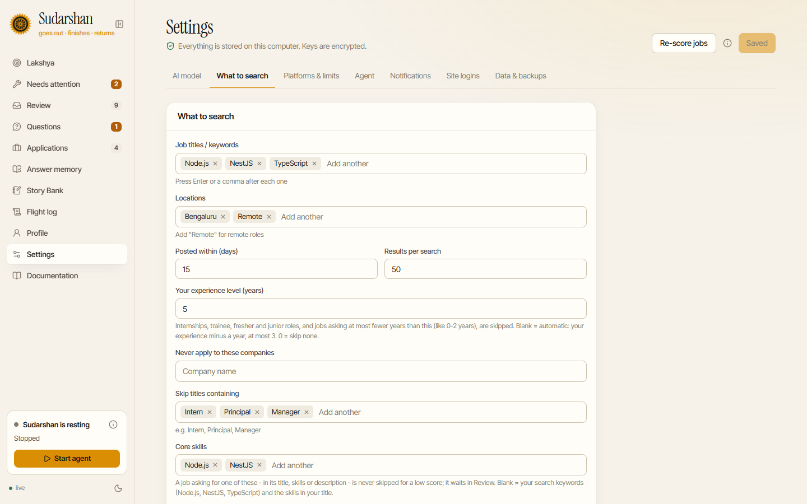
| Setting | What it does |
|---|---|
| Job titles / keywords | What to search for. Sites that allow it get all of them in one "any of these" search per location. |
| Locations | Cities to search. Add Remote for remote jobs. |
| Posted within (days) | Only jobs this recent. |
| Results per search | How many jobs to take from each search. |
| Your experience level (years) | Used to skip roles far below or above your level. |
| Never apply to these companies | Any job from these companies is skipped. |
| Skip titles containing | For example Intern, Principal, Manager. |
| Core skills | A job asking for one is never skipped for a low score; two or more score it a little higher. Blank uses your keywords. |
| Easy Apply only | Only LinkedIn jobs that apply inside LinkedIn: fastest and most reliable. |
| Remote only | Only remote jobs. |
Platforms & limits
Which job sites to use, and how many applications a day on each.
An on/off switch and a daily limit for every job site, company career sites and job links you add.
Job sites restrict accounts that apply faster than a person could. Low limits protect your accounts.
Switch sites on or off and set Per day. Use safe pace sets limits, gaps and hours a person could keep. The same switches are on Lakshya's Apply on cards.
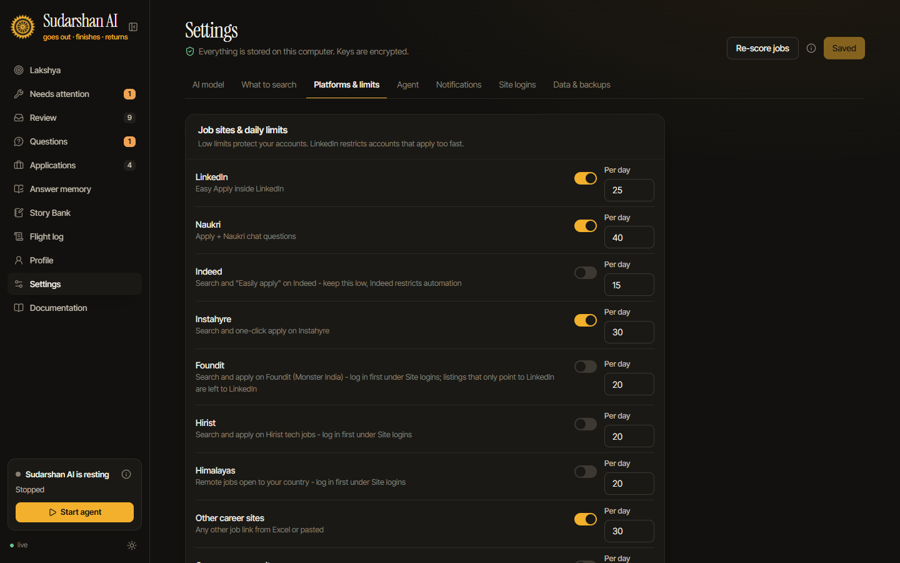
Out of the box: LinkedIn 25, Naukri 40, Instahyre 30 and job links 30 applications a day; Indeed (15), Foundit, Hirist, Himalayas and company career sites start switched off. Applications are 40-110 seconds apart, between 8:00 and 23:00, with a search every hour. Use safe pace puts these back.
Agent
How the agent behaves: when it works, how fast, and how careful.
The agent's mode, score thresholds, pacing, active hours and safety switches.
So Sudarshan AI works the way you are comfortable with, from "ask me about everything" to "apply to strong matches by yourself".
Change a setting and press Save. It applies from the next job.
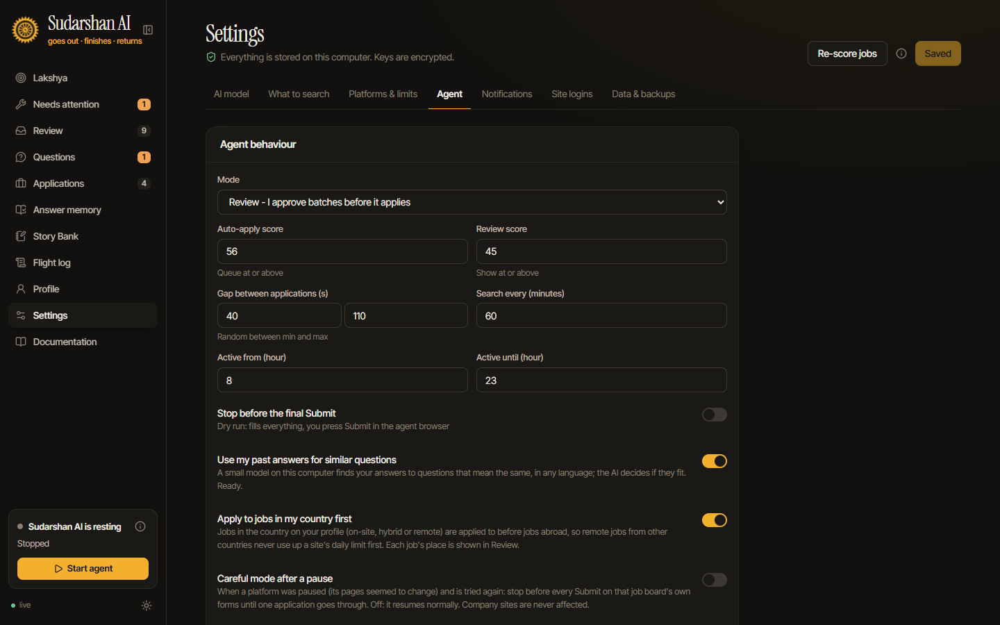
| Setting | What it does |
|---|---|
| Mode | Review (default): you approve every job. Auto: jobs at or above the auto-apply score are queued by themselves. |
| Auto-apply score | In Auto mode, jobs at or above this are queued. |
| Review score | Jobs at or above this are shown in Review; below it they are skipped. |
| Gap between applications (s) | A random wait between applications, between the min and max you set. |
| Search every (minutes) | How often job sites are searched. |
| Active from / until (hour) | Sudarshan AI works only between these hours, like a person. |
| Stop before the final Submit | A dry run: it fills everything, and you press Submit in the agent browser. |
| Use my past answers for similar questions | Shows the AI your own answers to questions that mean the same, in any wording or language. They are never filled in by themselves. |
| Apply to jobs in my country first | On (the default): approved jobs in the country on your profile - on-site, hybrid or remote - are applied to before jobs abroad, so remote jobs from other countries never use up a site's daily limit first. Jobs that do not say where go in between. Off: the best match goes first wherever it is. |
| Careful mode after a pause | After a site was paused for failing, it resumes stopping before every Submit until one application goes through. |
| Rescue stuck applications with AI | When the usual way gets stuck on an unfamiliar site, the AI takes over from the same page for a few steps. |
| AI job scoring | Off uses the free rule-based score only. |
| Hide the browser window | Runs the agent's browser hidden. Visible is recommended: you can watch it and solve captchas. |
| Daily AI token budget | Paid models stop at this each day. Local models are unlimited. |
| Browser path (optional) | Leave blank to use Chrome or Edge automatically. |
This tab also shows Learning from your applications: the small models that learn on your computer (see How it learns), with Train now.
Notifications
Know what happened without watching Sudarshan AI.
Desktop notifications, a daily summary, Telegram messages on your phone, and replies read from your email.
So a captcha or a question does not sit for hours, and you know when an employer answered.
Switch on what you want. Telegram and email are optional and need a one-time setup.
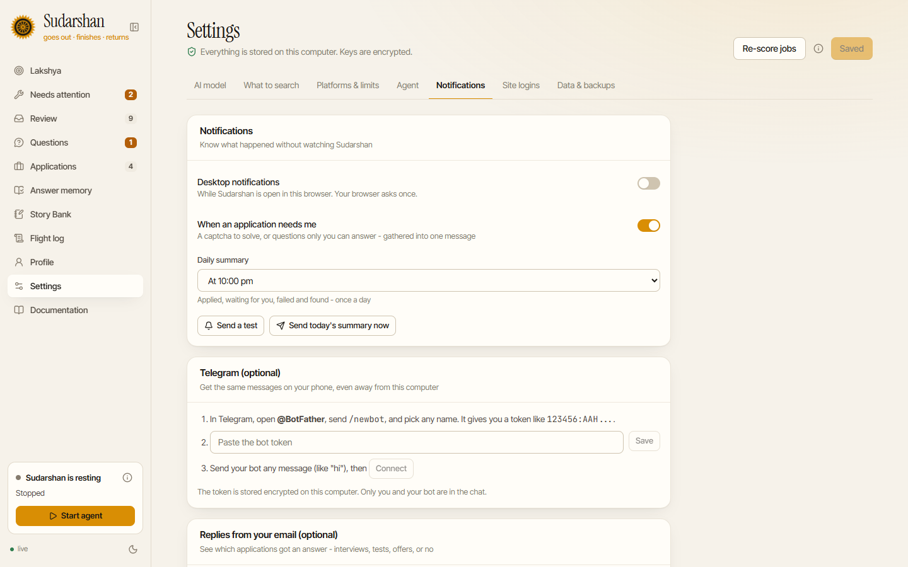
| Setting | What it does |
|---|---|
| Desktop notifications | While Sudarshan AI is open in your browser. The browser asks once for permission. |
| When an application needs me | A captcha to solve or questions only you can answer, gathered into one message. |
| Daily summary | Applied, waiting for you, failed and found, once a day at the hour you choose. |
| Telegram (optional) | The same messages on your phone. Create a bot with @BotFather, paste its token, send it a message, and connect. |
| Replies from your email (optional) | Reads your mailbox on your computer with an app password and shows each application's reply: received, a test, an interview, an offer, or not selected. Only the sender, subject and meaning are kept, never the email itself. |
Setting up Telegram
Telegram sends you the same messages as the desktop notifications - when an application needs you, and the daily summary - on your phone, wherever you are.
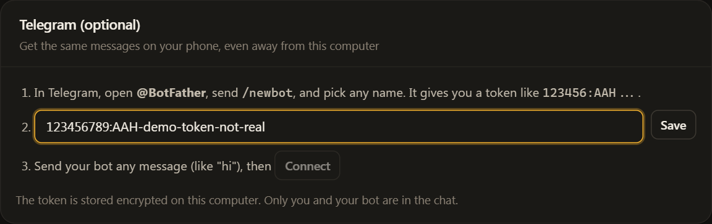
- In Telegram, open @BotFather, send
/newbotand pick any name. It replies with a token like123456:AAH.... - Paste the token into the box and press Save. The card says which bot it saved.
- Send your new bot any message (like "hi"), then press Connect. The card shows Connected; Send today's summary now above it sends a test.
The token is stored encrypted on your computer. Only you and your bot are in the chat. Disconnect removes it.
Setting up replies from your email
Sudarshan AI reads your mailbox every 30 minutes and matches replies to your applications - "received", a test, an interview, an offer, or "not selected" - shown as a badge on each application in Applications.
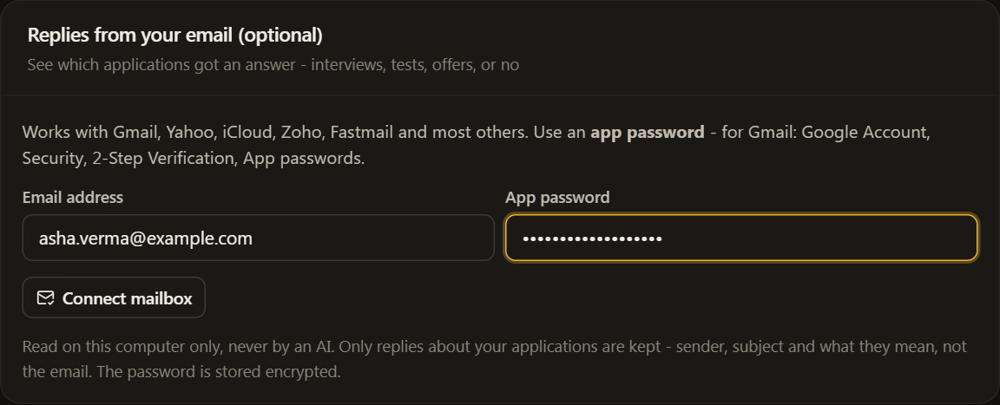
- Make an app password for your mailbox - not your normal password. Gmail: Google Account → Security → 2-Step Verification → App passwords. Yahoo: Account security → Generate app password. iCloud: appleid.apple.com → Sign-In and Security → App-Specific Passwords.
- Enter your email address and the app password, then press Connect mailbox. Gmail, Yahoo and iCloud are known; for another provider an IMAP server box appears - enter its address (for example
imap.example.com). - The card shows Reading your address, when it last checked, and how many replies it has matched. Check now reads it straight away; Disconnect stops it.
It is read on your computer only, never by an AI. Only replies about your applications are kept - the sender, the subject and what they mean, never the email itself. The app password is stored encrypted, and is never in a backup.
Site logins
Log in to each job site once, in Sudarshan AI's own browser.
The login state of every job site in the agent's browser.
Applying needs you to be signed in. Sudarshan AI never sees or stores your passwords.
Press Log in. A window opens on the site; sign in as usual. The row then shows Connected.

For a site whose login Sudarshan AI does not know yet (Himalayas, for example), it learns the login the first time you sign in, then shows Connected from then on. When a login runs out, Needs attention tells you and that site waits until you log in again.
Data & backups
Your data, the spreadsheet, and backups you can restore.
Spreadsheet import and export, daily backups, an off-computer backup folder, and restore.
Everything Sudarshan AI learned about you lives in one file. A backup means a damaged disk never costs you more than a day.
A full backup is made once a day by itself. Point Also copy each backup to this folder at a synced folder to keep a copy elsewhere.
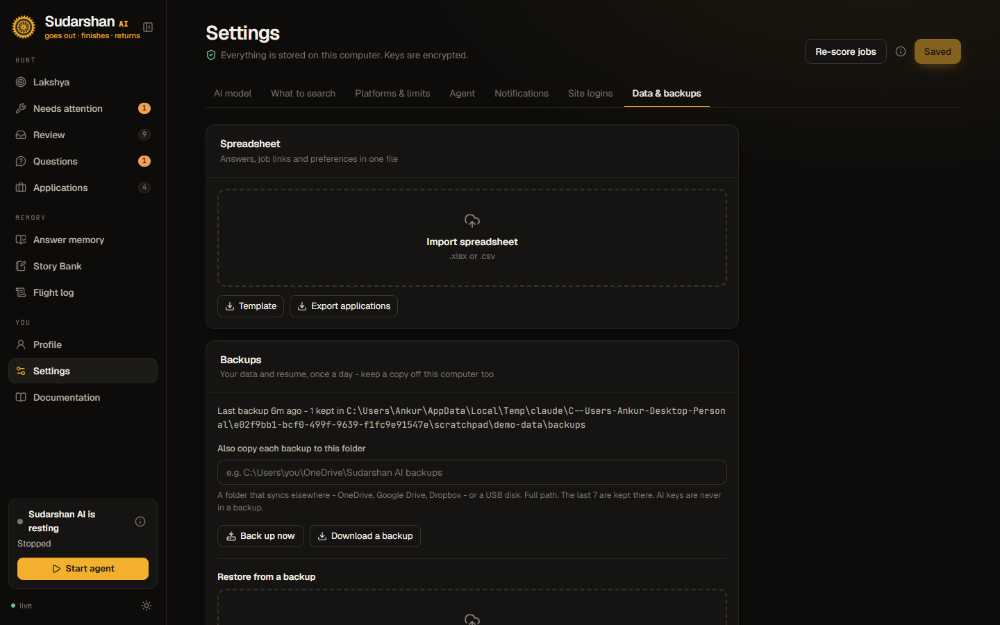
Where your data is
| Computer | Data folder |
|---|---|
| Windows | C:\Users\<you>\.sudarshan (or .job-apply-agent from before the rename) |
| macOS | /Users/<you>/.sudarshan |
| Linux | /home/<you>/.sudarshan |
Inside: agent.db (profile, answers, jobs, applications, what it learned), backups (the last 7 daily backups), secret.key (unlocks your saved AI keys), browser-profile (the agent's logins), uploads (your resumes), screenshots (kept 30 days) and logs (kept 14 days).
Old files are cleared when Sudarshan AI starts and then every 24 hours while it runs - there is no fixed time of day; while it is closed nothing runs, and the next start catches up. The same pass makes the daily backup. An attempt keeps its record (steps, fields, result) after its pictures are cleared.
Restoring a backup
- Open Data & backups → Restore from a backup and choose the file (a daily
agent-YYYY-MM-DD.dbor a downloadedsudarshan-backup-....db). - Press Restore. Your current data is kept as
before-restore-....db, Sudarshan AI restarts by itself, and the page reloads. - Enter your AI key again: keys are never in a backup, so a backup can never leak them.
How questions are answered
Your facts first, the AI last, and you whenever it cannot know.
- Your profile. Name, email, phone, notice period, salary, education years, links, skills with years: filled by rules, in many languages and wordings.
- Answer memory. The same question answered before, on any site.
- The AI, once per form, for whatever is left. It sees your profile, your resume, your work history and the stories that fit, and answers only what it can back up from them.
- You, on the Questions page, for anything it cannot know.
Rules it always keeps
- High-stakes questions are never guessed: salary, notice period, joining date, relocation, visa and work permits, legal or signed declarations, ID or bank numbers, date of birth.
- A pre-filled answer that contradicts your profile is corrected, for plain facts like your school, city, phone, salary and notice period. Some job sites pre-fill from an old profile of theirs.
- Answers fit the box: "30" in a box that wants a number, not "30 days"; your phone with your country code when the box shows a dialling code. When a site turns down a "Yes" or "No" because its box takes only a number, the answer goes in again as the number the question means: your notice period in days for a question about notice or starting, the number the question names ("within 30 days"), or else 1 for Yes and 0 for No.
- Job posts cannot steer the AI. Anything written by strangers is marked as data, never instructions. A post that tries to talk to AI tools is scored by rules only.
- Your personal identifiers never reach the AI: phone, email, address, date of birth, PAN, Aadhaar, passport and bank details are hidden from it and filled from your profile only.
How it learns
All on your computer. None of it needs an AI model unless it says so.
| It learns | From | So that |
|---|---|---|
| Your answers | Every answer you give or that a form accepted | The same question is never asked twice. |
| How to operate each kind of field | Fields that needed another way to fill (open and click, type and pick, type and Enter) | Next time that kind of field on that site is filled the right way first. |
| Each site's steps | Buttons that moved an application on, from applications the site confirmed | A known site is replayed without trial and error or AI. |
| From you | Applications you finish by hand in the agent's browser | Your answers and steps are reused. What Sudarshan AI itself filled is never counted as yours. |
| Your interest | Jobs you approve, apply to, skip and dismiss | Review can sort by how much a job looks like the ones you want. |
| Four small models | Your daily applications, retrained every few hours | Better field recognition, similar-question matching, forward-button picking and success ranking. Each checks itself before it acts. |
When a site changes. If a site's last three applications all got stuck, Sudarshan AI stops applying there instead of failing quietly, and Needs attention says so. Finish one by hand (it learns the new steps) or press Try again carefully.
Captchas and hand-overs
What Sudarshan AI leaves to you, on purpose, and how to finish it quickly.
Captchas, sites that need an account or a code sent to your email or phone, and pages it cannot work out.
Captchas exist to keep automated tools out. Sudarshan AI never solves or gets around them, and never creates accounts for you.
It fills everything else, keeps the tab open, tells you, and carries on with other jobs meanwhile.
- Sudarshan AI fills the whole form and stops at the captcha. The job shows Do by hand: "Filled - only the captcha is left".
- The tab stays open in the agent's browser, and the agent moves on to the next job.
- Switch to that tab and solve the captcha. Press Submit yourself, or just leave the tab: a few seconds later Sudarshan AI presses Submit for you (or press Continue in Applications).
- When the site confirms, the job turns Applied by itself ("Finished by you"), and anything you typed is remembered.
Sudarshan AI also protects you on the way: it never fills a page reached through an advert, checks that a form is about the job before filling it, and treats a job page that shows a different job, a "404" or "no longer accepting applications" as closed.
Job sites
| Site | Search | Apply |
|---|---|---|
| Public listings (your account untouched) | Easy Apply inside LinkedIn; "Apply" follows to the company's own site. | |
| Naukri | Its own search data | One click, including its chat-style questions. |
| Indeed | Its own search data (log in to see more than the first page) | Indeed Apply; a real captcha is handed to you. |
| Instahyre | Its own search data | One click. |
| Foundit | Its own search data | One click, or the company's site. |
| Hirist | Its own search data | One click, or its short questions form. |
| Himalayas | Remote jobs open to your country | Through to the company's form (Ashby, Lever, Greenhouse, BambooHR and others). Needs a Himalayas login. |
| Company career sites | Job links you add | Greenhouse, Lever, Ashby, Workday, SmartRecruiters, Keka, BambooHR and custom forms. |
Job sites change their pages often. For your first applications on a new site, keep Stop before the final Submit on and check the result.
Safety and privacy
- Everything stays on your computer, in your data folder: the database, your resume, the agent's browser profile, logs, screenshots and backups.
- API keys are encrypted (AES-256-GCM) with a key made on your computer, and never sent back to the page.
- No passwords stored. You log in to job sites in the agent's own browser window.
- Local only. The app listens on
127.0.0.1and refuses requests from other websites. - What leaves your computer: traffic to the job sites you use and the AI provider you chose (none with a local model), and, only if you turn them on, Telegram (your own bot) and your mailbox (read only).
The Excel sheet
One file to teach Sudarshan AI your answers, links and preferences at once.
Download the template from the wizard or Settings → Data & backups → Spreadsheet, fill it in, and load it with Import spreadsheet there (or in the wizard). It has three sheets, all optional:
| Sheet | What to put in |
|---|---|
| Answers | Question | Answer rows, such as "What is your notice period? | 30 days". They go straight into answer memory. |
| Job Links | URL | Title | Company | Notes. Any job links; they are queued straight away. |
| Preferences | Setting | Value rows: Keywords, Locations, Remote only, Easy Apply only, Posted within days, Exclude companies, Exclude title words, Mode, Min apply score, daily limits, Notice period days, Current CTC, Expected CTC, Willing to relocate. |
When something goes wrong
Look at Needs attention first. Every problem is listed there with how to fix it.
| You see | What it means | Fix |
|---|---|---|
| Your provider account has no credits | The AI key works but has no balance | Add credit, or switch to Gemini, Groq or Ollama (free). |
| API key was rejected | Wrong or expired key | Paste a new key and press Test connection. |
| All N jobs were skipped | Nothing matched your rules | Follow the reasons shown; press Re-score jobs after changing your profile. |
| N jobs waiting for your approval | You are in Review mode | Approve jobs on Review. |
| Not logged in to a site | The agent's login ran out | Settings → Site logins → Log in. |
| Applying this fast can get your accounts restricted | A limit, gap or active hours faster than a person | Settings → Platforms & limits → Use safe pace, then Save. |
| Stopped right after pressing Submit | It was closed at the moment it sent | Check the site or your email; mark it Applied or queue it again. It never sends twice by itself. |
| Filled - only the captcha is left | The site wants a human | Solve it in the open tab. See Captchas and hand-overs. |
| Port 4747 is already in use | Sudarshan AI is already running | Open http://localhost:4747, or stop the other one. |
| No Chrome, Edge or Brave found | No supported browser | Install Google Chrome. |
Each attempt keeps a screenshot and a step-by-step trace: Applications → open the job → Attempts. When you report a problem, share those and the Flight log lines around it, with your personal details removed.
Questions people ask
Does it apply without asking me?
Only in Auto mode, and only to jobs at or above your auto-apply score. In Review mode (the default) nothing is sent until you approve it.
Will it lie on my applications?
No. Facts come from your profile and your own answers. The AI only answers what your profile and resume back up, never guesses high-stakes facts, and anything it cannot know comes to you.
Remote jobs abroad keep using up my limit before jobs in my country. What can I do?
Keep Settings → Agent → Apply to jobs in my country first on (it is on by default): jobs in your country go first. To approve only those, filter Review by Where: In <your country> and press Approve all. Check that your Profile has your country.
Can it solve captchas?
No, by design. It fills everything else and hands the captcha to you; after you tick it, Sudarshan AI finishes the application.
How much does the AI cost?
Very little, or nothing with a free tier or local model. Memory answers most questions, and the daily token budget caps what a paid model can use.
Can I use it on two computers?
Yes: back up on one, restore on the other (Settings → Data & backups), then enter your AI key again.
How do I update or remove it?
Installed with the one-line installer, it updates itself on start. From a clone: git pull then npm start. To remove it, delete the sudarshan-ai folder and your data folder.